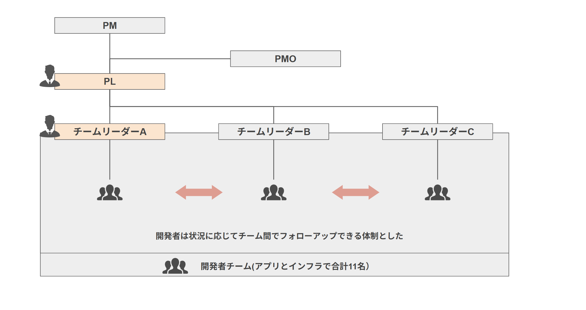
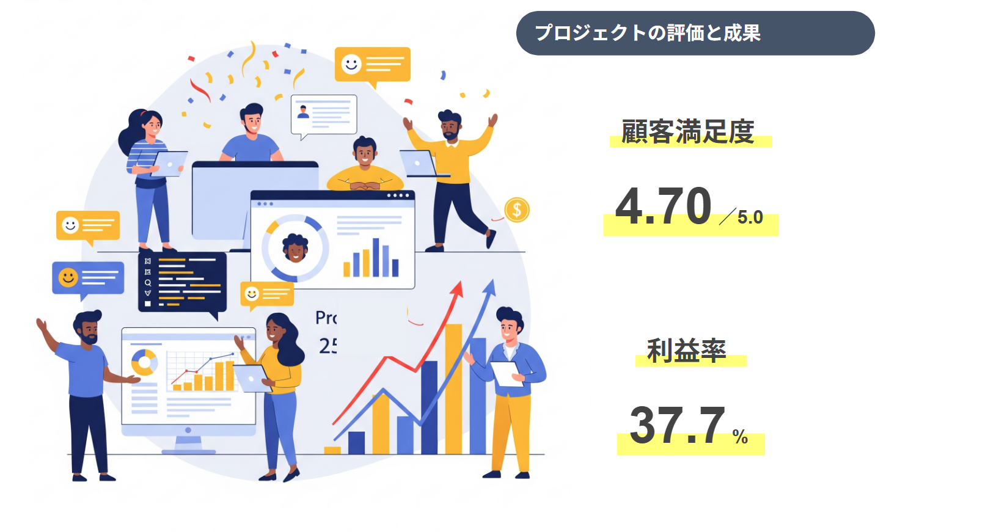

- PROFILE :
- 西崎慧 Nishizaki Kei
和歌山県和歌山市 出身
和歌山大学システム工学部メディアデザインメジャー 卒業
- CONTACT :
- nszkki.19981116@gmail.com
- ADDRESS :
- 大阪府大阪市
Osakashi, Osakafu Japan

入社3年目という若手ながら、大規模クラウド移行プロジェクトにおいてプロジェクトリーダーを担当させて頂いた。
ベテラン社員の支援を受けながら、現行調査・移行計画の立案から各部門との調整、リスク対策まで一貫して主導。

A社対象事業部で利用している業務システムには下記の複数の課題があった。
・レガシーなオンプレシステムの為、劣化更新が必須となった
・事業部ごとに異なる業務要件・非機能要件を満たす必要あり
・現状機能の維持かつ運用費の削減を可能にするインフラ設計が求められた

A社対象事業部で利用している業務システムの課題を解決するべく、下記の目的をもってPJに取り組んだ。
・老朽化したオンプレミスシステムの刷新化
・事業部ごとに分散していたインフラ基盤の統一
・今後の全社DXに向けたクラウド基盤の整備

本プロジェクトではプロジェクトリーダーとしてアサインされた。
各フェーズにおけるアプリチームとインフラチームでの進捗管理や課題解決を行った。そのほか顧客等対応も適宜実施。

本プロジェクトでは主に下記の技術を利用した。
・クラウド技術：Azure(VM,SQL DB,Azure Migrate,Azure Monitor等)
・Webアプリ関連：Java／SQL Server等
・テスト関連：RPA／J-Meter

本プロジェクトでは私はPLと1チームリーダーを担当した。また3システムの劣化更新を1つのプロジェクトとして捉えることで 課題の共有や開発者の割り当てやを柔軟に行うことができ、円滑なプロジェクト推進を可能にした。

顧客満足度の評価を頂き、高採算を取れたことで年間アワードプロジェクトとして推薦された。
また他事業部への展開ということで現在新規システム開発も実施されている。


各事業部の業務要件やインフラ状況をヒアリングし、段階的かつ業務影響を最小限に抑える移行計画を策定した。 SLA・セキュリティ・可用性といった非機能要件に対応した設計を行い、社内のインフラ基盤の共通化に成功した。 プロジェクト完了後には、システム運用工数が3割以上削減され、障害発生時の対応も迅速化できていると感じる。 また、本プロジェクトは現職の年間で実施されるアワードプロジェクトとして受賞頂いた。 これらの経験は業務の深い理解と今後の管理業務（PL）において自信に繋がった。
既存システムのインフラ環境をクラウド(Azure)化すると同時に3つ個別業務システム統合基盤とすることで大きな効果を目指した。